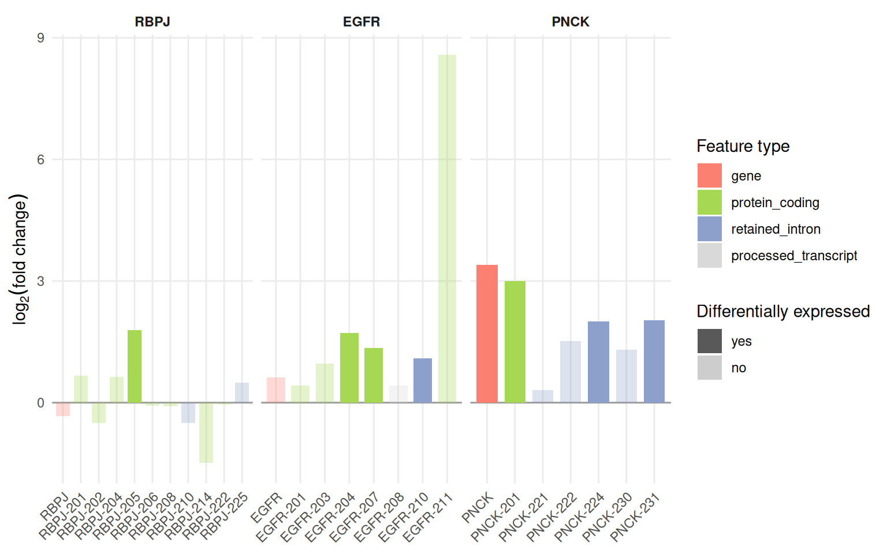
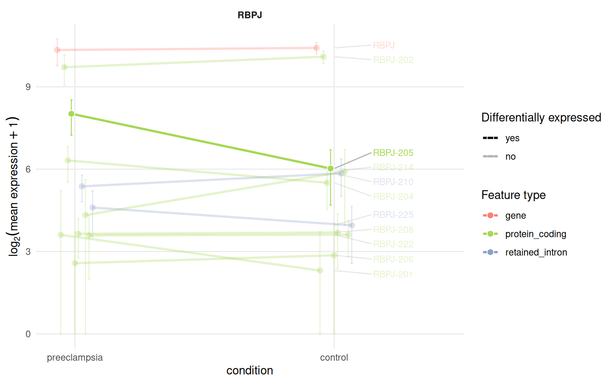
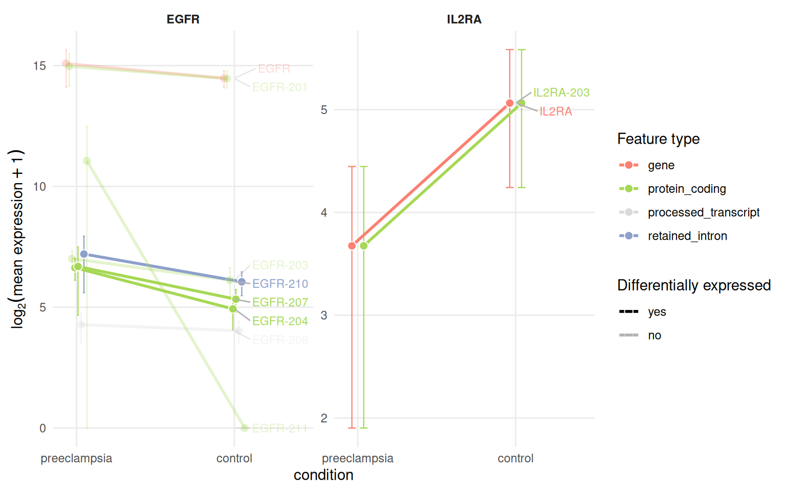
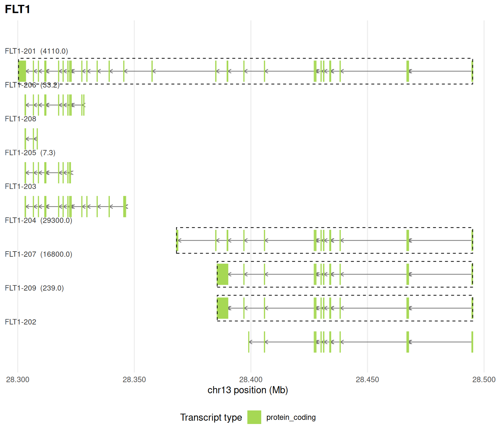
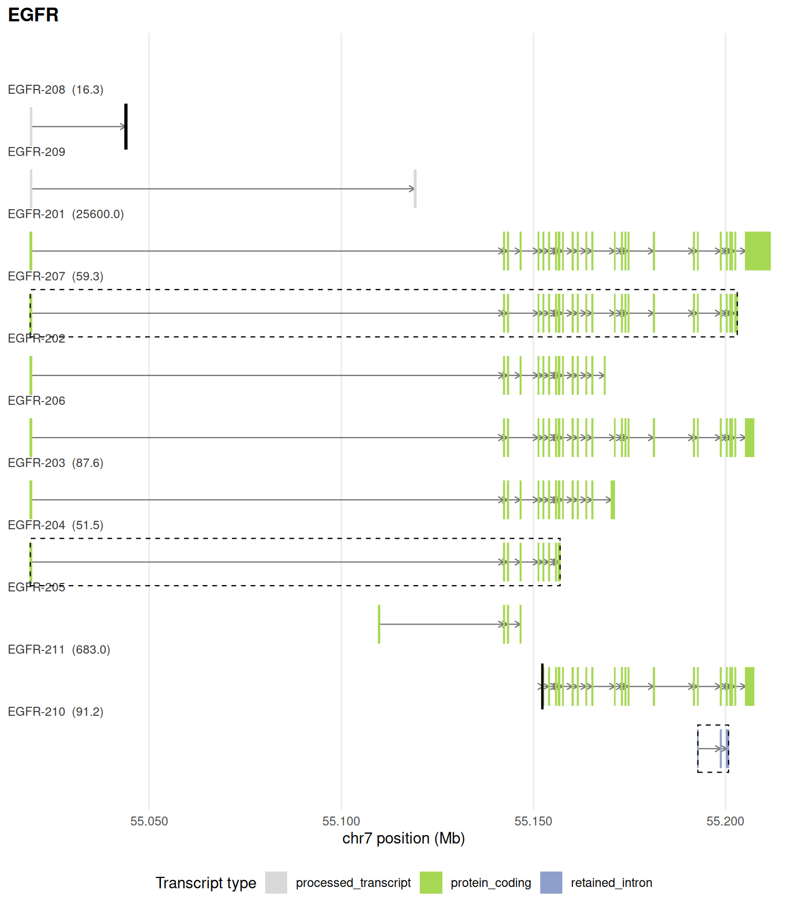
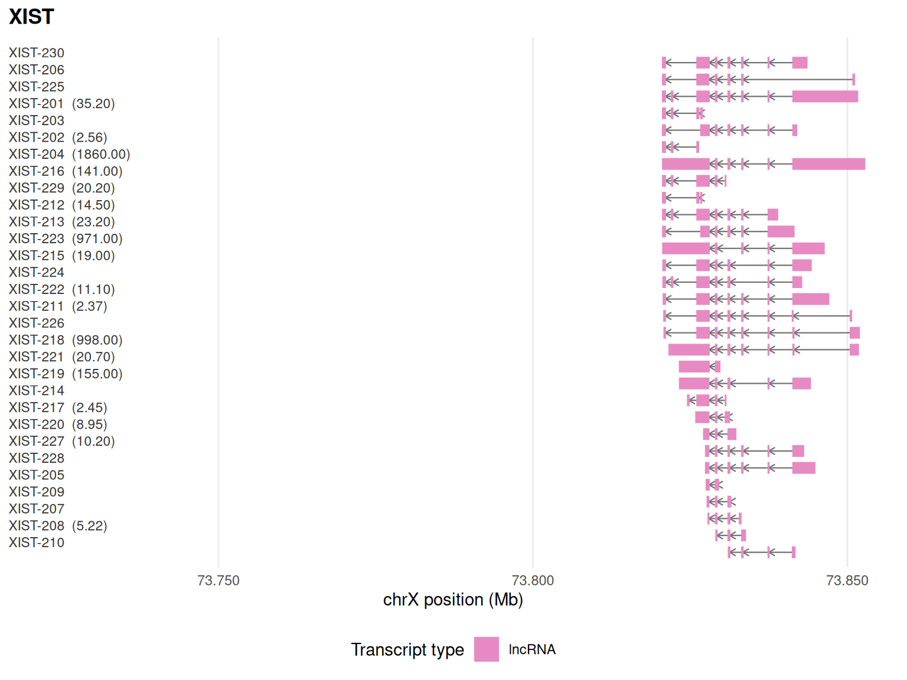

library(isoformic)
extdata <- fs::path_package("isoformic", "extdata")
annot_dir <- prepare_isoformic_annotation(download_reference(version = "33", file_type = "gff"))
iso <- IsoformicExperiment(
experiment_name = "preeclampsia_placenta",
annot_path = annot_dir,
assays = list(abundance = read_parquet(fs::path(extdata, "pe_abundance.parquet"))),
col_data = read_parquet(fs::path(extdata, "pe_col_data.parquet"))
)
de_tx(iso) <- read_parquet(fs::path(extdata, "pe_det.parquet"))
de_gene(iso) <- read_parquet(fs::path(extdata, "pe_deg.parquet"))Three plots show a gene and its isoforms from three angles: the fold-change of each isoform next to that of the gene, the expression of each isoform across conditions and the exon-intron structure of each isoform along the genome. All of them are ggplot2 objects and take an IsoformicExperiment (or the equivalent table, see working with plain tables).
They start from the object built in the introduction:
Log2 fold-change plot
plot_log2fc() compares the fold-change of a gene with that of each of its transcripts, coloured by transcript type and faded when not significant. Several genes give one panel each.
plot_log2fc(iso, feature = "RBPJ")
plot_log2fc(iso, feature = c("RBPJ", "EGFR", "PNCK"), ncol = 3)
The colours come from tx_type_palette() and can be replaced through the tx_type_palette property of the object; productivity_palette() colours the productivity classes the same way.
tx_type_palette()
#> gene protein_coding
#> "#fb8072" "#a6d854"
#> retained_intron protein_coding_CDS_not_defined
#> "#8da0cb" "#fc8d62"
#> nonsense_mediated_decay lncRNA
#> "#66c2a5" "#e78ac3"
#> processed_pseudogene transcribed_unprocessed_pseudogene
#> "#ffd92f" "#e5c494"
#> unprocessed_pseudogene non_stop_decay
#> "#d9d9d9" "#d9d9d9"
#> transcribed_unitary_pseudogene pseudogene
#> "#d9d9d9" "#ffffb3"
#> unitary_pseudogene processed_transcript
#> "#d9d9d9" "#d9d9d9"
#> unknown novel
#> "#bdbdbd" "#8c6bb1"
#> misc_RNA miRNA
#> "#d9d9d9" "#d9d9d9"
#> snRNA snoRNA
#> "#d9d9d9" "#d9d9d9"
#> full-splice_match incomplete-splice_match
#> "#a6d854" "#66c2a5"
#> novel_in_catalog novel_not_in_catalog
#> "#fdb462" "#bc80bd"
#> genic antisense
#> "#d9d9d9" "#80b1d3"
#> fusion intergenic
#> "#fccde5" "#d9d9d9"
#> genic_intron coding_mRNA
#> "#d9d9d9" "#a6d854"
#> lncRNA_intergenic lncRNA_antisense
#> "#e78ac3" "#8da0cb"
#> lncRNA_divergent lncRNA_sense_intronic
#> "#fc8d62" "#66c2a5"
#> sense_overlap_RNA short_ncRNA
#> "#ffd92f" "#e5c494"
#> uncertain_coding
#> "#b3b3b3"Expression profile plot
plot_tx_expr() shows the mean expression of a gene and of each of its isoforms in every condition, with standard deviations, so that isoform switches become visible as crossing lines.
plot_tx_expr(iso, gene_name = "RBPJ", group = "condition")
plot_tx_expr(iso, gene_name = c("IL2RA", "EGFR"), group = "condition", ncol = 2)
The underlying table is available with profile_data().
head(profile_data(iso, gene_name = "RBPJ", group = "condition"))
#> # A tibble: 6 × 10
#> feature_id feature_name feature_type gene_id gene_name group mean_expr sd_expr
#> <chr> <chr> <chr> <chr> <chr> <fct> <dbl> <dbl>
#> 1 ENSG00000… RBPJ gene ENSG00… RBPJ pree… 1297. 427.
#> 2 ENSG00000… RBPJ gene ENSG00… RBPJ cont… 1367. 195.
#> 3 ENST00000… RBPJ-201 protein_cod… ENSG00… RBPJ pree… 11.2 25.1
#> 4 ENST00000… RBPJ-201 protein_cod… ENSG00… RBPJ cont… 3.95 8.30
#> 5 ENST00000… RBPJ-202 protein_cod… ENSG00… RBPJ pree… 838. 303.
#> 6 ENST00000… RBPJ-202 protein_cod… ENSG00… RBPJ cont… 1095. 169.
#> # ℹ 2 more variables: n_samples <int>, is_de <chr>Genomic context plot
plot_genomic_context() draws the exon-intron structure of every annotated isoform of a gene along the genome, coloured by transcript type, labelled with its mean expression and outlined when differentially expressed. Poison exons (see the productivity article) are outlined as well.
plot_genomic_context(iso, gene_name = "FLT1")
plot_genomic_context(iso, gene_name = "EGFR")
upstream_offset widens the window, for example to show a neighbouring gene:
plot_genomic_context(iso, gene_name = "XIST", upstream_offset = 100000)
Session information
sessionInfo()
#> R version 4.6.2 (2026-10-29)
#> Platform: x86_64-pc-linux-gnu
#> Running under: Ubuntu 26.04.1 LTS
#>
#> Matrix products: default
#> BLAS: /usr/lib/x86_64-linux-gnu/openblas-pthread/libblas.so.3
#> LAPACK: /usr/lib/x86_64-linux-gnu/openblas-pthread/libopenblasp-r0.3.32.so; LAPACK version 3.12.0
#>
#> locale:
#> [1] LC_CTYPE=C.UTF-8 LC_NUMERIC=C LC_TIME=C.UTF-8
#> [4] LC_COLLATE=C.UTF-8 LC_MONETARY=C.UTF-8 LC_MESSAGES=C.UTF-8
#> [7] LC_PAPER=C.UTF-8 LC_NAME=C LC_ADDRESS=C
#> [10] LC_TELEPHONE=C LC_MEASUREMENT=C.UTF-8 LC_IDENTIFICATION=C
#>
#> time zone: UTC
#> tzcode source: system (glibc)
#>
#> attached base packages:
#> [1] stats graphics grDevices utils datasets methods base
#>
#> other attached packages:
#> [1] isoformic_0.1.2.9022
#>
#> loaded via a namespace (and not attached):
#> [1] gtable_0.3.6 jsonlite_2.0.0 dplyr_1.2.1 compiler_4.6.2
#> [5] tidyselect_1.2.1 Rcpp_1.1.2 scales_1.4.0 yaml_2.3.12
#> [9] fastmap_1.2.0 ggplot2_4.0.3 R6_2.6.1 labeling_0.4.3
#> [13] generics_0.1.4 curl_8.1.0 knitr_1.52 ggrepel_0.9.8
#> [17] tibble_3.3.1 DBI_1.3.0 pillar_1.11.1 RColorBrewer_1.1-3
#> [21] rlang_1.3.0 utf8_1.2.6 xfun_0.62 fs_2.1.0
#> [25] S7_0.2.2 otel_0.3.0 cli_3.6.6 withr_3.0.3
#> [29] magrittr_2.0.5 digest_0.6.39 grid_4.6.2 lifecycle_1.0.5
#> [33] vctrs_0.7.3 evaluate_1.0.5 glue_1.8.1 farver_2.1.2
#> [37] duckdb_2.0.0 rmarkdown_2.32 tools_4.6.2 pkgconfig_2.0.3
#> [41] htmltools_0.5.9